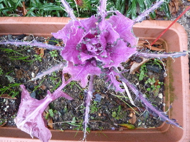
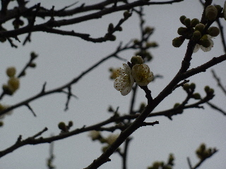
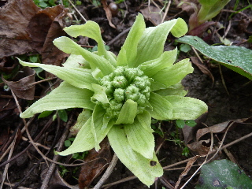
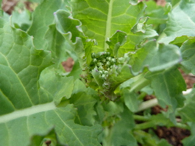
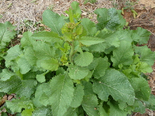
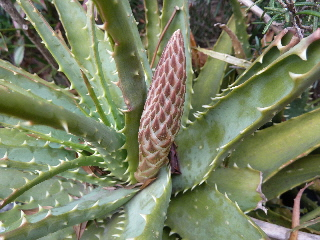
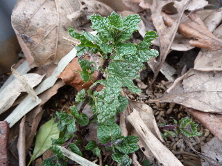
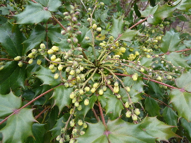

遊びで植物を育てよう
2015/02/01
葉ボタンは美味しいですか
葉ボタンって食べられちゃうんですね。

食べたのは何でしょう。
やっぱり虫かな。
寒そうです。
【2月TOP】 【日記TOP】 【園芸TOP】
2015/02/01
梅が咲きだしました。
2月になったので梅の季節です。

まだちょっとだけですが、花が咲いてるといいですね。
寒いので、あまり花見はできませんが。
【2月TOP】 【日記TOP】 【園芸TOP】
2015/02/08
フキノトウが開いていました。
あんまりフキノトウを採っていなかったら、すっかり開いていました。

なんか硬そう。これはもう収穫しない。
あんまり食べたいって思わなかったので、見てませんでした。
次からは見ようかな。
【2月TOP】 【日記TOP】 【園芸TOP】
2015/02/08
小さい「あすっこ」が出来ました。
あすっこの蕾が出来ていました。

とっても小さい。
あんまり小さいので、収穫する気になりませんでした。
もうちょっと大きくなってから採ります。
【2月TOP】 【日記TOP】 【園芸TOP】
2015/02/28
巨大なカラシ菜が出来ました。
葉っぱを大きく広げたカラシ菜が出来ました。

今は他に食べる野菜が沢山あるので、放置です。
あすっこが沢山育ってるので、そっちを食べなきゃ。
【2月TOP】 【日記TOP】 【園芸TOP】
2015/02/28
アロエの花が今年の咲きそう。
アロエの真中から今年もなんて言うのかわからないですが、出て来ました。

花が咲くのが楽しみです。
【2月TOP】 【日記TOP】 【園芸TOP】
2015/02/28
ミントって冬に枯れないんだ。
枯れてると思ってたら、小さいながら緑でした。

多年草なんだ。
毎年何もしないでも生えているって楽ちんですね。
【2月TOP】 【日記TOP】 【園芸TOP】
2015/02/28
ヒイラギナンテンが咲きました。
花が咲いてるけど何って名前の木でしょう？

ネット検索して調べました。
柊南天（ヒイラギナンテン）だそうです。
花の付き方が面白いですね。
【2月TOP】 【日記TOP】 【園芸TOP】
過去の日記
【2014年2月の日記】
【2013年2月の日記】
【2月TOP】
【日記TOP】
【園芸TOP】
畑仕事じゃないよ。
【おいしいものを食べよう。】【しっかり寝よう。】
【ソロ活をしよう!】【季節感のあることをしよう。】【動画視聴はほどほどに。】【当サイトの全てのコンテンツは無断転載禁止です。】